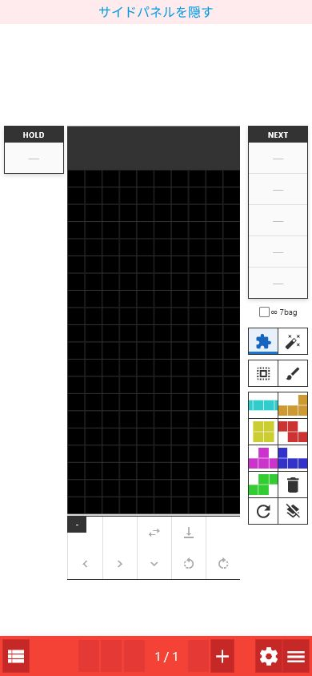
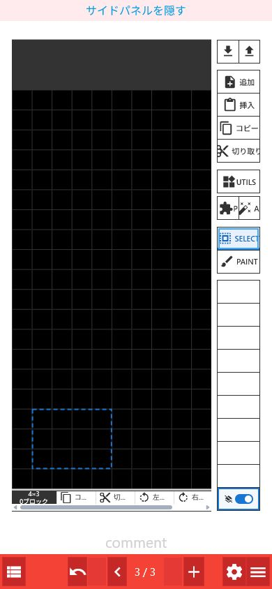

まず使ってみる
このマニュアルは、実装と実画面を基に生成AIを利用して作成・メンテナンスしています。
- Fumen Mobile Forkを開く。
- 編集画面で色を選び、盤面をタップまたはドラッグしてブロックを置く。
- 下部の ＋ で次のページを作る。
- 左下のリストアイコンで全ページを確認する。
- 右下のメニューから読み込み、共有、設定、Helpを開く。
4つの画面を使い分ける
Reader
完成したテト譜を閲覧します。前後ページへの移動、アニメーション再生、コメント確認に向いています。鉛筆アイコンでEditへ移動します。
Edit
盤面、ミノ、コメント、ページを編集します。通常の作業はこの画面から始めます。
List
全ページをカード形式で並べて確認します。並べ替え、コメント一括編集、画像やURLの出力に向いています。
Tree
同じ局面から複数の手順へ分岐させます。候補手、セットアップ、補完の整理に向いています。
ListとTreeは同じ一覧画面内の「リスト」「ツリー」タブで切り替えます。ツリーを有効にすると、ページ順はツリー構造に合わせて管理されます。PCではEditの左側へList/Treeをサイドパネル表示することもできます。
盤面を編集する

PAINTで描く
ペン
7色・黒・灰色から選び、タップまたはドラッグでブロックを置きます。色を長押しすると対応するミノを出現させ、PIECEへ切り替わります。
消しゴム
ブロックを消します。設定の黒ペイントドラッグでスポーンミノを通過削除が有効なら、ドラッグが通過したSPAWNミノも削除します。
塗りつぶし・行を塗る
連続した範囲または1行を選択色で塗ります。空色を選ぶと同じ範囲を消去します。
COMP
マスを4つ選び、形からミノを推定して対応色で確定します。長押しすると色付きブロックを空マスにし、灰色ブロックを残します。SPAWNミノも消去します。
右側の操作レール
| ボタン | できること | 長押し |
|---|---|---|
| 取り込み （下向き矢印） | クリップボードから挿入・読み込みを行うモーダルを開く | — |
| 書き出し （上向き矢印） | 画像保存、テト譜データ・URL共有、外部サイト連携を行うモーダルを開く | — |
| 設定 （歯車） | ユーザー設定のフィールドタブを直接開く | — |
| 追加 | 現在ページの直後にページを追加する | — |
| 挿入 | クリップボードのテト譜または盤面画像を次ページへ挿入する | 全ページを読み込み内容で置き換える |
| コピー | 現在ページをfumen v115形式でコピーする | 全ページをコピーする |
| 切り取り | 現在ページをコピーして削除する | 全ページを切り取る |
| ユーティリティ | 反転、スライド、盤面変換などのパネルを開く | — |
| フラグ | 固定、せり上がり、反転などページ情報のパネルを開く | — |
| AI | Cold Clearの探索メニューを開く | — |
PAINT・PIECE・SELECTを切り替える
| モード | 主な操作 |
|---|---|
| PAINT | ペン、消しゴム、塗りつぶし、行を塗る。パレットはブロック色として表示されます。 |
| PIECE | パレットからミノを出現させ、Hold、ハードドロップ、左右移動、ソフトドロップ、回転を操作します。左右移動の長押しは端まで移動します。 |
| SELECT | 盤面をドラッグして矩形選択し、コピー、切り取り、左右回転、反転を行います。 |
選択中のモードボタンをもう一度押すと、盤面下の操作トレイを表示／非表示にできます。幅が足りないときはトレイを横へスクロールしてください。
PIECEのHOLDとNEXT

- HOLD / NEXT：PIECEのときだけ表示されます。NEXTは近いピースから上へ並びます。
- ピースキュー設定：HOLDまたはNEXTを選ぶと開きます。入力内容はページコメントへ
T:IOTLJのような形式で保存されます。 - パレット：ミノを選ぶとSPAWNします。ごみ箱はSPAWNミノの削除、RESETは位置と向きのリセット、∞ 7bagはキューの自動生成を切り替えます。
SELECTで範囲を再利用する

- SELECTを選び、盤面上を始点から終点までドラッグする。
- 操作トレイからコピー、切り取り、左右回転、反転を選ぶ。
- コピーまたは切り取りした範囲はパレットの空き枠へ保存されます。その枠を選び、盤面をタップしてスタンプします。
- 枠のピンを選ぶとパーツを固定保存できます。COMPは、スタンプ時に黒セルを透過するかを切り替えます。
ユーティリティとフラグ
- ALL MIRROR：全ページを左右反転します。
- SLIDE：盤面を1段上へ移動し、空いた最下段をグレーにします。
- 固定：ページ上のミノを固定し、次ページへ進むときにライン消去を反映します。
- パネル：見出しをドラッグして移動できます。閉じるボタンまたはEscで閉じても、PAINT・PIECE・SELECTの選択は維持されます。
ページとコメントを管理する
前後へ移動
下部の左右ボタンで移動します。長押しすると最初または最後のページへジャンプします。
途中へ追加
次ページがある状態でも ＋ や 挿入 を使えます。新しいページは現在ページと次ページの間に入ります。
元に戻す
Undo / Redoで直前の編集を戻したりやり直したりできます。画面モードをまたぐ編集でも履歴が維持されます。
コメント
盤面下の欄へ説明やNEXTキューを書けます。Listでは全ページを見ながら編集・一括置換できます。
Listで全ページを整理する
編集画面左下のリストアイコンから開きます。

- カードを1回選ぶと、そのカードがアクティブになります。別カードでは、同じカードをもう一度選ぶとそのページのEditへ移動します。
- #ページ番号からも対象ページへ移動できます。サイドパネルでは画面を切り替えず、右側のEditだけが更新されます。
- カードをドラッグするとページを並べ替えられます。ツリーモード中は並べ替えできません。
- コメント欄はその場で編集できます。ユーティリティの置換から全ページの文字列を一括置換できます。
- 下部バーからEditへ戻る、ツリーモード切替、List/Tree切替、ユーティリティ、Import/Export、設定を開けます。Undo/Redoは左下、表示設定は右下のフローティングボタンです。
- ユーティリティ：Listを離れずに全ページ反転、グレー化、クリア、コメント一括置換などを実行できます。
- 表示設定(右下のボタン)には上部の空白行を省略の切り替えとズームのスライダーがあります。スライダーは100%付近で自動的にスナップし、%表示をタップすると100%に戻ります。Ctrl+ホイールでも拡大縮小できます。
Treeで手順を分岐管理する
- List上部の「ツリーモードを有効にする」を選ぶ。
- ツリーアイコンを選び、Treeへ切り替える。
- 起点にしたいノードを選び、色付きボタンで続きを作る。

追加・移動・削除
| 操作 | クリック | ノードをドラッグして重ねる |
|---|---|---|
| 緑の＋ | 選択ノードの続きとしてページを追加 | そのノードの次へ移動 |
| オレンジの＋ | 選択ノードから新しい分岐を追加 | 分岐先へ移動 |
| 青の複製 | ノードや分岐を複製 | — |
| 「ページを削除」 | 「移動/削除」で選んだ範囲を削除。直後の通知からUndo可能 | — |
- 移動/削除：左下のチップで「ノードのみ」「ノードと配下」「配下のみ」を選びます。移動と削除に同じ範囲が適用されます。
- 配下のみ：ノードを残して子孫だけを移動・削除します。通常、緑ボタンは直下の子が1つのときに使えますが、移動先が葉ノードなら複数の子サブツリーも元の順序で移動できます。
- 削除：各ノード右上の「ページを削除」アイコンを選びます。削除後に表示される通知の元に戻すで復元できます。最後の1ページは削除できません。
- ノード選択：カードを1回選ぶとアクティブになります。別ノードでは、同じカードをもう一度選ぶとそのページのEditへ移動します。
- ツリー解除：ツリー情報が削除されるため、確認ダイアログが表示されます。
- 親ツリー追加：既存の枝につながらない独立したルートを作ります。別セットや別巡目を同じテト譜で管理するときに使います。
- +ボタンでグレー化：＋でページを作るとき、ライン消去後のブロックをグレーにします。ハードドロップではグレー化しないも設定できます。
- アクティブノードまで：ルートから選択中ノードまでだけをPNGや共有URLとして出力します。
#TREE=... として保存されます。ツリー利用中はこの文字列を削除・書き換えないでください。他のテト譜ツールで開くと、この文字列が通常コメントとして見える場合があります。PCのサイドパネルを使う
PCではEditを開いたまま、左側にListまたはTreeを表示できます。盤面を編集しながらページ全体や分岐を確認したいときに便利です。

- 画面最上部の サイドパネルを表示 を選ぶ。ユーザー設定の「リスト/ツリービュー」→「サイドパネルを表示（PC）」からも切り替えられます。
- リストまたはツリータブを選ぶ。
- カードやノードを選び、右側の盤面を編集する。コメントと現在ページも相互に同期します。
- Listタブ：ページ移動、コメント編集、ドラッグ並べ替えができます。ツリーモード中は並べ替えできません。
- Treeタブ：ツリーの有効化、ノード追加・分岐・複製・削除、移動・削除範囲の選択、ページ移動ができます。
- 表示設定・ズーム：パネル右下の設定ボタンから、フル画面と同じズームスライダーや表示設定を操作できます。移動・削除範囲のチップは左下、AIボタンは設定ボタンの上に表示されます。
- 幅の変更：パネル右端の区切り線をドラッグします。区切り線をダブルクリックすると自動幅へ戻ります。
- 表示条件：PC用機能です。画面幅が1024px未満になると自動的に隠れ、幅を戻すと再表示されます。
Cold Clearで盤面を分析する
- Edit、List、Treeにある青い AI ボタンを選ぶ。
- Hold、Queue、B2B、Comboを現在の状況に合わせる。
- 探索条件を確認し、目的に合う探索を実行する。

3つの探索
連続探索
設定したキューの最後までAIの手順を追加します。まず結果を1本見たい場合に向いています。
分岐探索
各局面の上位候補をTreeへ追加します。複数の候補手を比較したい場合に使います。
スコア取得
盤面にSPAWN済みのミノを置いた状態で、その配置をAIに評価させます。自分の手の比較に使えます。
キューの入力
- Hold欄とQueue欄を選び、I O T L J S Z ボタンで入力できます。
- クリアは現在選択中のHoldまたはQueueを消します。
- +1bagはQueueへ7種1組を追加します。
- B2B：現在のBack-to-Back状態を指定します。Combo：現在のREN数を指定します。
- コメントにキュー形式の文字列がある場合は、その情報を読み取ります。既存の通常コメントがあるときは内容を確認してから編集してください。
探索設定
| 設定 | 意味 | 目安 |
|---|---|---|
| Hold使用 | 探索中にHoldを許可する | 実戦に合わせるならオン |
| NEXT制限 | AIへ渡す既知NEXT数を0〜30に制限する | 見えているNEXTだけで比較したいときに使用 |
| 思考時間 | 1手あたり200ms〜5s探索する | まず1s。速度優先なら短く、精度優先なら長く |
| 重み Default | 標準の評価戦略 | 通常はこちら |
| 重み Fast | Tスピンより掘りやRENを選びやすい評価戦略 | 速度・掘りを重視する比較用 |
| Speculate | 既知キューより先のピースを推測して探索する | NEXTが短い状況で候補を広げる |
| 上位候補数 | 分岐探索で残す候補数。1〜20 | 候補を増やすほど処理と結果量が増える |
探索中は同じメニューから探索停止を実行できます。進行状況はAIボタンにも表示されます。
読み込み・保存・共有
クリップボードから挿入
現在位置の次、またはList/Treeでは末尾へ読み込み内容を追加します。今あるテト譜を残してつなげたい場合に使います。
クリップボードから読み込む
現在の全ページを読み込み内容で置き換えます。置き換えてよいことを確認してから実行してください。
テト譜データをコピー
全ページをfumen v115以降の文字列としてコピーします。他のテト譜ツールへの受け渡しに使います。
共有URL
現在のテト譜を含むURLを開く、またはコピーします。共有やブックマークに使います。
PNG / GIF
一覧を静止画またはアニメーションとして保存します。「上部の空白行を省略」などの表示設定も反映されます。
外部サイト
対応するテト譜サイトで現在の内容を開きます。サイトによって対応する情報が異なる場合があります。
tetgram連携
tetgram用rawデータをコピーでツリー構造ごと渡し、tetgramで開くで盤面を読み込み済みの状態で開けます。
Import/Exportモーダル

- 取り込み：クリップボードから読み込むは全体を置き換え、クリップボードから挿入は現在の内容の末尾へ追加します。クリップボード上のtetgram RawData JSONも自動判定します。PCではCtrl+V（Macは⌘+V）の短押しが挿入、500ms以上の長押しが読み込みと同じ動作です。
- 画像を保存：PNGとGIFを選べます。GIFではフレーム間隔を設定できます。
- 出力範囲：List/TreeのImport/Exportでは、画像・共有・外部サイトに適用する範囲を「すべてのページ」または「選択中のページまで」から選べます。
- 共有：FUMENとURLをコピーまたは開けます。
- tetgram連携：tetgram用rawデータをコピーはツリー構造（リスト配置）ごと渡せます。tetgramで開くは盤面を読み込み済みで開きますが、ツリーのリスト配置はURLに含まれません。
- URL短縮：TinyURLによる短縮を利用するか設定できます。
読み込める主な形式
- Fumen Mobile Fork、fumen-for-mobile、PC版テト譜のURL
- fumen v115以降の文字列
- tetgram RawData JSON
- クリップボードにコピーした盤面画像
共有URLにはページやツリー情報が含まれます。tetgramで開くURLにはツリーのリスト配置は含まれません。URLが長い場合は、Import/Exportの短縮URL設定を利用できます。
ユーザー設定を調整する
| タブ | 主な設定 |
|---|---|
| フィールド | FLAGSを表示、黒ペイントドラッグでスポーンミノを通過削除、+ボタンでグレー化、ハードドロップではグレー化しない、ブロック表面のマーク |
| リスト/ツリービュー | 上部の空白行を省略、+ボタンでグレー化、サイドパネルを表示（PC） |
| ショートカット | ショートカットラベル表示、パレット・編集用・ピースショートカット、左右長押しのDAS(ms) |
| ピース | ピースショートカット、ゴースト表示、キックテーブル、ARR・DAS・DCD・SDF |
| その他 | ページ移動のループ [Reader]、初期画面、ツリーデータ(#TREE)付きのデータはTree画面で開く、GIFページ送り間隔 |
- ショートカットラベル表示：各ボタンの右下に割り当てキーを表示します。
- キーの変更：対象欄を選んでキーを押します。Backspaceで割り当てを解除できます。
- キックテーブル：「クラシック」「SRS」「SRS+」から回転法則を選びます。SRS+では180度回転も利用できます。
- 初期画面：起動時に開くReader・Editor・List・Tree画面を選びます。ツリーデータ(#TREE)付きのデータをTree画面で開く設定もあります。
- +ボタンでグレー化：フィールドとリスト/ツリービューのどちらのタブから変更しても同じ設定へ反映されます。
- サイドパネル：「サイドパネルを表示（PC）」でEdit左側のList/Treeパネルを有効にします。
- 設定の保存：ブラウザ内に保存されます。ブラウザデータを削除すると初期化されます。
覚えておくと便利な操作
| 操作 | 結果 |
|---|---|
| 前・次ページを長押し | 最初・最後のページへ移動 |
| Listアイコンを長押し | ツリーモードを有効にしてTreeへ移動 |
| メニューを長押し | 新しいテト譜を作成 |
| PIECEを長押し | 盤面上のSPAWNミノを削除 |
| 選択中のPAINT・PIECE・SELECTをもう一度押す | 盤面下の操作トレイを表示／非表示 |
| 色を長押し | 対応ミノをSPAWN |
| 黒を長押し | 盤面全体を空にし、SPAWNミノも消去 |
| 灰を長押し | 色付きブロックをすべて灰色にする（空マスはそのまま） |
| COMPを長押し | 色付きブロックだけを空マスにし、灰色ブロックを残す。SPAWNミノも消去 |
| 盤面を右クリック | 黒ブロックを置く（PCのみ） |
| PIECEのHold | HOLDとカレントを入れ替え、ページコメントのキューも更新 |
困ったとき
ページを並べ替えられない
ツリーモード中はListのドラッグ並べ替えが無効です。ツリー構造を維持したままTreeでノードを移動するか、ツリーモードを解除してください。
AIを実行できない
Queueが空でないか確認してください。スコア取得ではSPAWNミノの配置が必要です。探索中は一部の設定を変更できません。
画像を読み込めない
画像がクリップボードにコピーされていること、盤面のマス目に沿っていることを確認します。余白や文字を減らして再度範囲選択してください。
ツリーが消えた
1ページ目コメントの #TREE=... が残っているか確認します。削除後に保存や共有を行った場合、元のツリー情報は復元できないことがあります。
設定が戻った
設定はブラウザ内に保存されます。キャッシュやサイトデータの削除、別ブラウザ・別端末では引き継がれません。
共有相手と見え方が違う
共有URLを開き直し、回転法則、「上部の空白行を省略」、ツリーモードなどが意図どおりか確認してください。